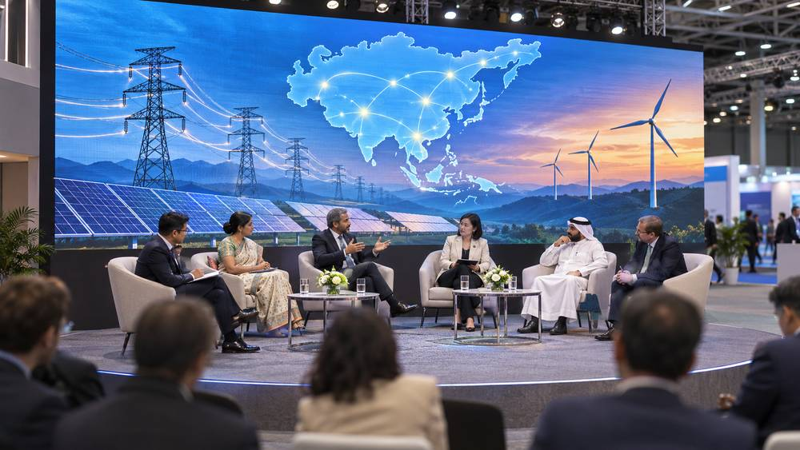
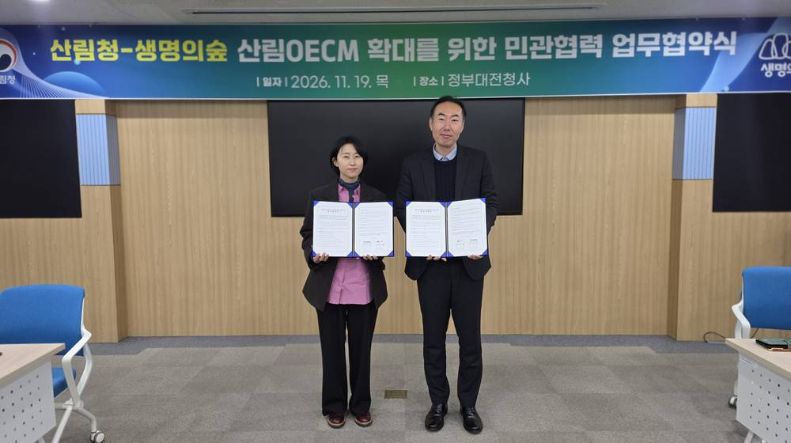

서남권투자공사 법안, 주민·지역 조합도 출자 길 연다
안도걸 의원 등 10명이 낸 제정안으로, 정부·산업은행 등이 자본금 5조 원 공사를 세우고 서남권 주민·조합 출자와 배당 공개를 정했다. 공포 1년 뒤 시행.




국공유지 태양광 임대 20년으로, 재생에너지법 개정안
박지혜 의원 등 12명이 11월 18일 냈다. 발전설비 설치기간을 따로 두고 한 차례 10년 연장을 허용하는 안으로, 현행법은 10년씩 두 차례 갱신을 둔다.

협동조합기본법 개정안, 조합원 총회 소집·안건 제안권
안도걸 의원 등 11명 발의로 조합원 5분의 1이 총회 소집을, 10분의 1이 안건을 요구할 수 있고 원격영상 총회와 우선출자 한도 50% 확대가 담겼다.
오늘 주목할 소식
- 난방전기화 히트펌프 3차 제품 선정, 12월 2일 마감
- 사회복지시설 히트펌프·태양광, 설치비 80% 지원
- 나주 햇빛소득마을, 12개 마을 사전 컨설팅
- 도시가스요금 경감, 실거주지 신청 길 열고 한도 1년 연장
- ESS 구축지원 2차 공모, 접속대기 배전선로 34곳 대상
- 청주 하수처리장 바이오가스로 넉 달 새 수소 2만6,801kg…하루 370톤 통합바이오가스화시설도 추진
햇빛소득마을 더보기 ›
정치 더보기 ›
서남권투자공사 법안, 주민·지역 조합도 출자 길 연다
안도걸 의원 등 10명이 낸 제정안으로, 정부·산업은행 등이 자본금 5조 원 공사를 세우고 서남권 주민·조합 출자와 배당 공개를 정했다. 공포 1년 뒤 시행.
정책 더보기 ›
국공유지 태양광 임대 20년으로, 재생에너지법 개정안
박지혜 의원 등 12명이 11월 18일 냈다. 발전설비 설치기간을 따로 두고 한 차례 10년 연장을 허용하는 안으로, 현행법은 10년씩 두 차례 갱신을 둔다.
산업·경제 더보기 ›
서남권투자공사 법안, 주민·지역 조합도 출자 길 연다
안도걸 의원 등 10명이 낸 제정안으로, 정부·산업은행 등이 자본금 5조 원 공사를 세우고 서남권 주민·조합 출자와 배당 공개를 정했다. 공포 1년 뒤 시행.
금융 더보기 ›
서남권투자공사 법안, 주민·지역 조합도 출자 길 연다
안도걸 의원 등 10명이 낸 제정안으로, 정부·산업은행 등이 자본금 5조 원 공사를 세우고 서남권 주민·조합 출자와 배당 공개를 정했다. 공포 1년 뒤 시행.
사회 더보기 ›
사회복지시설 히트펌프·태양광, 설치비 80% 지원
도시가스 없는 지역 민간 복지시설이 대상이다. 한국에너지공단이 11월 23~27일 신청을 받고, 예산 2억8,060만 원에 시설당 한도는 3,480만 원이다.
지역 더보기 ›
서남권투자공사 법안, 주민·지역 조합도 출자 길 연다
안도걸 의원 등 10명이 낸 제정안으로, 정부·산업은행 등이 자본금 5조 원 공사를 세우고 서남권 주민·조합 출자와 배당 공개를 정했다. 공포 1년 뒤 시행.
오피니언 더보기 ›
이순형 동신대 교수, 전남광주 재생에너지 50GW 일감 지역 기업에 돌리자 제안
투자 250조 원 추산하며 발주 시간표·공동도급·인력 양성 주문…산업부는 호남 주요 전력망 확충을 2031년 이후로 설명
시민에너지 더보기 ›
협동조합기본법 개정안, 조합원 총회 소집·안건 제안권
안도걸 의원 등 11명 발의로 조합원 5분의 1이 총회 소집을, 10분의 1이 안건을 요구할 수 있고 원격영상 총회와 우선출자 한도 50% 확대가 담겼다.